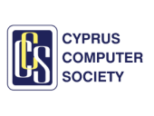
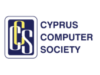
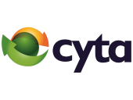
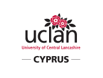
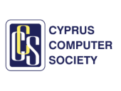

Are you a middle or high school student in Cyprus? Join us for an amazing day with an introduction to coding, as part of workshops on computer games, databases, and robots. Also, have fun in a unique Treasure Hunt using your smartphone, and win great trophies. Get your free ticket now at http://codecyprus.org
With the kind sponsorship of:


